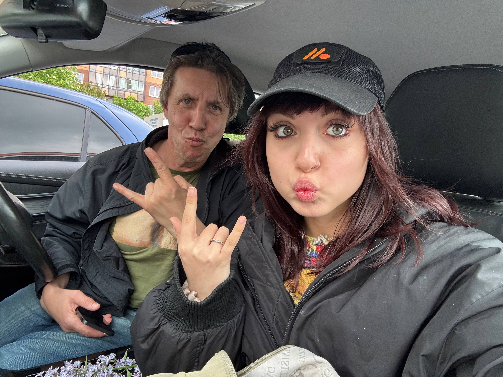
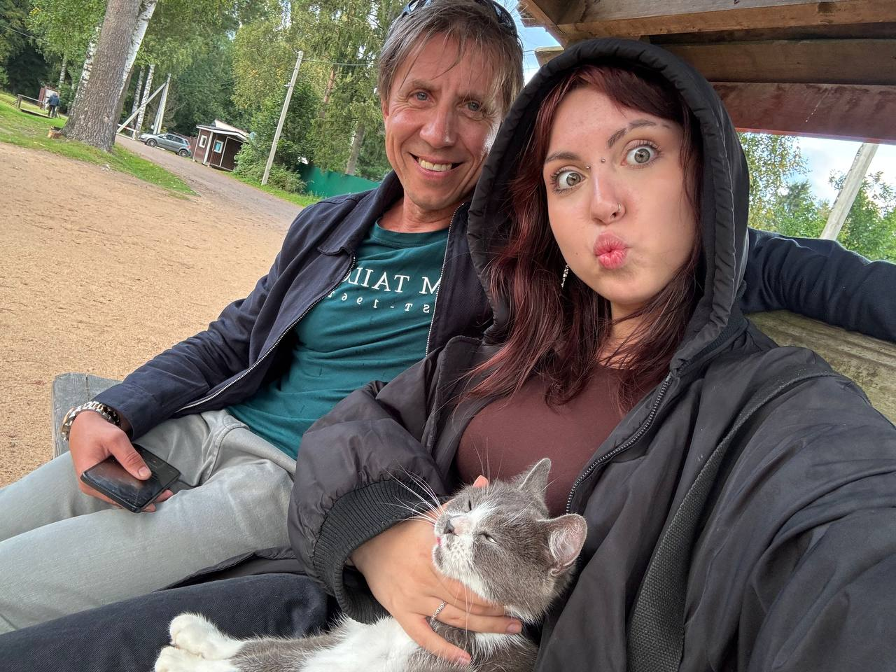
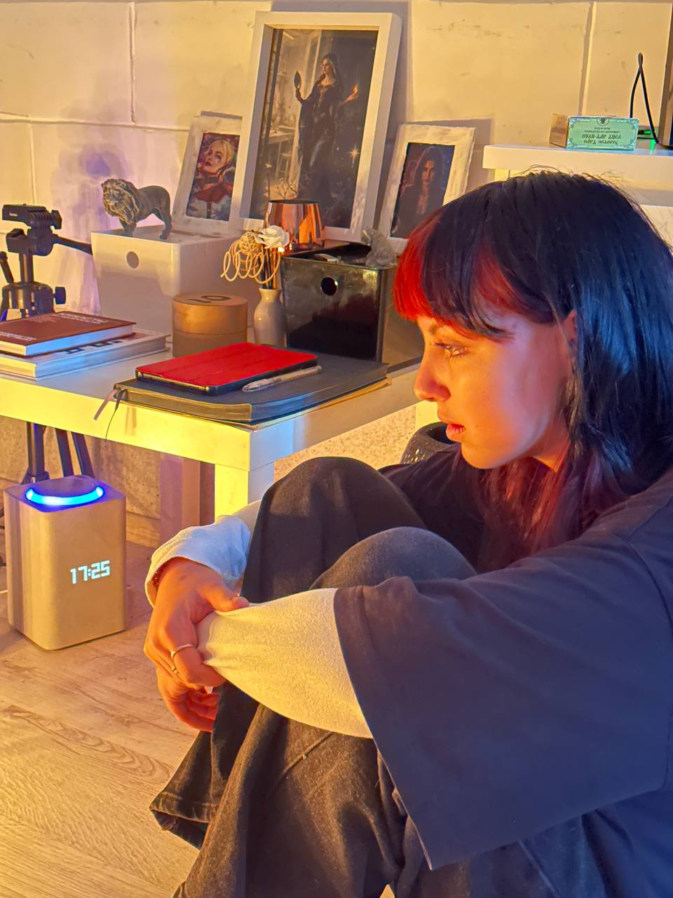

О нас


Мы — два отца. Один нифер, второй распиздяй. Первый отвечает за мрак, второй — за то, чтобы мрак не выглядел слишком серьёзно.
Здесь собрано всё, что мы не смогли держать в себе: хроники, ритуалы, детский психолог и карта мест, куда лучше не ходить ночью.
Сонюшо

липсинг
Треки
Смерть
трек №1
Убежим
трек №2
Зооуголок
Скоро: «То тюлень позвонит, то олень».
Рубрика в разработке. Тюлень уже набирает номер.